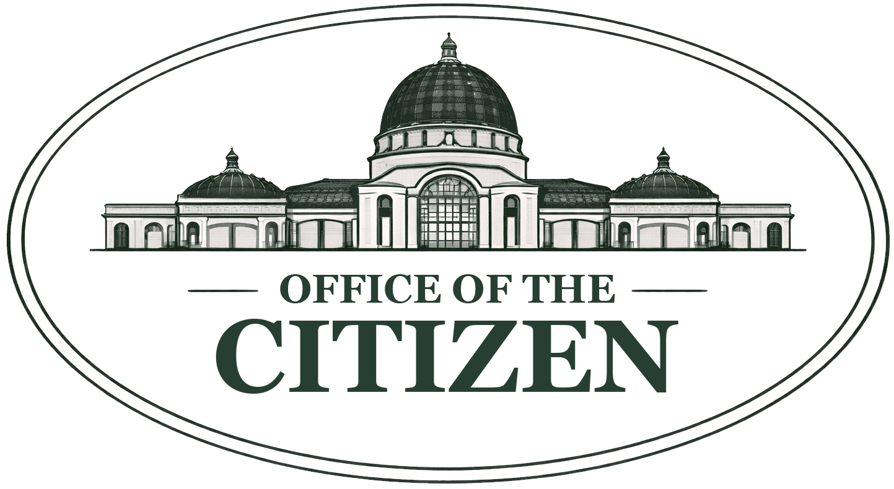

Methodology
The Archive methodology will be published here.
This route is reserved for the methodological framework behind Archive entries, evidence handling, publication standards, and revision logic.
Return to the Archive
This route is reserved for the methodological framework behind Archive entries, evidence handling, publication standards, and revision logic.
Return to the Archive